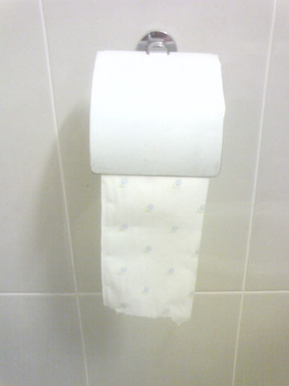
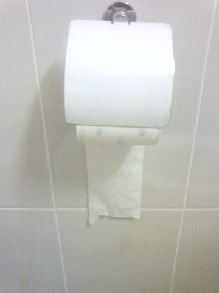
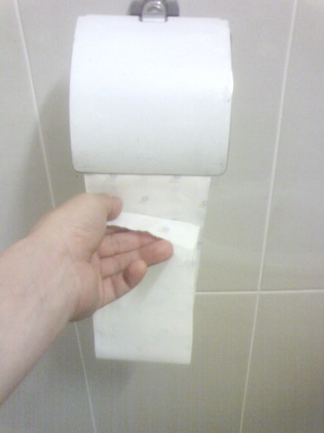
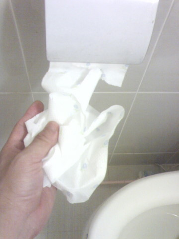

 |  |
| 두루마리 화장지 설치 A안 | 두루마리 화장지 설치 B안 |
우리가 흔히 화장실에서 사용하는 두루마리 화장지를 설치하는 방법에는 총 101가지가 있는데 크게는 위에서 보는 바와 같이 A와 B안이 존재한다. 대충 일을 보는 사람들은 A든 B든 상관없이 일만 잘 보면 된다고 생각하지만 먹는 건 오만가지 맛집을 까탈스럽게 돌아다니면서 그것을 배출하는 것에는 그닥 무감하다면 건강한 문화시민의 자세라고 보기 힘들지 않을까?
실제로 우리 회사 팀 사람중에는 이 A안과 B안을 놓고 심한 부부싸움을 하여 화목한 가정생활 영위에 악영향을 끼쳤다고 하는데 누구도 이렇게 중요한 두루마리 화장지의 올바른 설치 가이드를 제시하지 않고 있어 본인은 이 A안과 B안에 대해 짧은 시간이나마 연구고찰한 결과를 발표한다.
평상시의 화장실 때깔 측면에서 살펴보자. 요새 나오는 고급 두루마리 화장지는 한쪽 면에 이쁘장한 그림을 그려넣어서 한결 고급스러움을 뽐낸다. A안을 보면 일단 그 화장지 회사가 심혈을 기울여 그려넣은 그림을 볼 수가 있어서 그런 그림을 감출 수 밖에 없는 B안에 비하여 뽀대면에서 한 수 접고 들어가는 것을 알 수 있다. 만약 당신이 화장실의 때깔을 중요시한다면 당신은 A안 형 인간인 것이다.
그런데 한가지 더 살펴볼 때깔이 있다. 결국 두루말이 화장지는 둘둘 말아서 이쁘장하게 접힌 후 똥꼬와의 은밀한 마찰을 필요로 하는데 이때 얼마나 이쁘게 접히느냐는 측면에서 살펴볼 필요가 있을 것 같다.
 | |
| 접을 때의 A안 | 접을 때의 B안 |
여기서 분위기 대반전이 일어난다. 화장지를 고이 접어 닦을래라를 하려는 준비동작에서 우리는 희멀건한 A안의 자태에 비해 화려한 뽀대를 자랑하는 B안의 장점을 발견한다. 그렇다. B안의 장점은 고이 접어 닦을 때에 드러나는 것이다. 따라서 당신이 닦을 때(?)의 뽀대를 신경쓴다면 B안이 어울린다 할 것이다.
P.S.그러나 당신이 아래와 같은 유형의 똥꼬 닦는 사람이라면 이번 설치 가이드는 무용지물. 아띠바 니 맘대로 설치하시오.

공유하기 버튼
|
|


최근 덧글